Apple Watch用テニススコア管理アプリ — iPhoneの有無にかかわらず利用可能
Watchでスコアを記録 · iPhoneで詳細を確認
スコアを記録。試合をもっと深く理解。
Apple Watchをフルに活用したい場合は「Standalone」を、Apple Watchでのリアルタイムスコア記録とiPhoneでの試合履歴・統計情報を組み合わせたい場合は「Companion」をお選びください。
バージョンを見る
↓
自動試合スタッツ
サーブとリターン
ブレークポイント
Apple Health ワークアウト
ライブ心拍数
ローカル試合履歴
Tennis Score Wizardをお選びください
どちらのバージョンもApple Watchをフルに活用できます。Apple Watchのみをご利用の場合は「Standalone」を、iPhoneと連携した同じフル機能のウォッチアプリをご利用の場合は「Companion」をお選びください。
Standalone
Apple Watch専用
Apple Watchに直接インストールして、手首から試合全体を管理できます。iPhoneのコンパニオンアプリは不要です。
- Apple Watchでの試合設定とライブスコア表示
- 自動統計とローカル試合履歴
- オプションのApple Healthワークアウト記録
App Store から
ダウンロード
バージョン 1.4 · 配信中
Companion
iPhone + Apple Watch
Standaloneと同じ充実したApple Watchアプリをご利用いただけます。iPhoneと連携して、履歴、結果、ワークアウトデータ、詳細な統計情報を同期できます。
- Apple Watchでの試合設定とライブスコア表示
- Apple Watchでの履歴、統計、ワークアウト、コンプリケーション
- iPhoneでの同期された試合の振り返り
App Store から
ダウンロード
バージョン 1.1.1 · 配信中
機能を比較 ↓
Companionの体験
ひとつの体験を、ふたつの画面で。
Companionには、StandaloneのApple Watch機能がすべて含まれています。iPhoneでは、試合履歴、結果、統計データ、ワークアウトデータを同期し、より大きな画面で確認できます。
コート上 · Apple Watch
試合に必要な機能は、すべて手首に。
試合の設定、ポイントごとのスコア記録、サーブ位置の確認、「元に戻す」機能の使用、ワークアウトの記録、履歴や統計情報の確認、コンプリケーションからの起動など、Standaloneとまったく同じ操作が可能です。
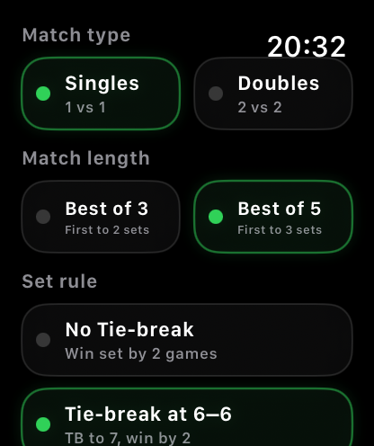
設定
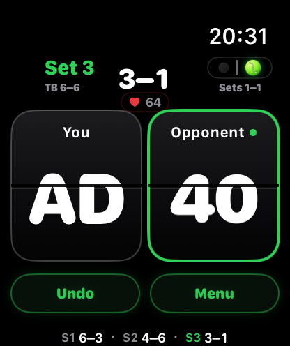
ライブスコア
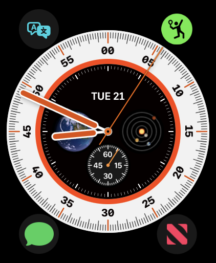
コンプリケーション
同期
コート外 · iPhone
必要なときに、より大きな画面で情報を確認できます。
保存した試合データはiPhoneに同期され、結果、履歴、詳細なパフォーマンス、トレーニングの分析情報をより詳しく確認しやすくなります。
01
フル機能のApple Watchアプリ
Standaloneで利用できるすべての機能が、Apple Watchでも利用可能です。
02
同期された試合履歴
保存した試合データは、Apple WatchとiPhoneの両方で利用可能です。
03
大画面での分析
iPhoneでスコア、サーブ、リターン、ブレークポイント、試合の流れ、タイブレークの統計を確認できます。
04
ワークアウトの詳細
どちらのデバイスでも、ワークアウトの時間、心拍数、アクティブエネルギーを確認できます。
CompanionのiPhone画面
必要なときは、iPhoneの大きな画面で。
試合の設定とスコアリングはApple Watchで行います。iPhoneでは、同期された結果、履歴、詳細なパフォーマンス、ワークアウトの分析情報を、すっきりとした広々とした画面で表示します。
最新の結果と最近の試合
Companionを開くと、Apple Watchから同期された最新の結果や最近の試合を確認できます。
すべての試合履歴
完了した試合や中断した試合を、試合形式、所要時間、結果、ゲーム数とともに確認できます。
スコアと主要な統計データ
セットごとのスコア、プレーしたポイント数、獲得ポイント数、勝率、タイブレークの結果を確認しましょう。
サーブ、リターン、ブレークポイント
サーブとリターンの成績、試合の流れとテンポ、ブレークポイントの状況を詳しく確認できます。
ワークアウトの分析
iPhoneでワークアウトの継続時間、平均心拍数、最大心拍数、アクティブエネルギーを確認できます。
Companion 1.1 の新機能
1試合の振り返りから、長期的な成長まで
カレンダーで試合日を確認し、集計スタッツで結果を整理。トレンドでは、プレーの変化を週単位・月単位で追えます。
月間カレンダー
勝利、敗戦、中断した試合をプレーした日に表示。同じ日に複数の試合があってもまとめて確認できます。
年間表示
各月の試合数と結果を一覧にして、シーズン全体をすばやく振り返れます。
パフォーマンス概要
期間とシングルス／ダブルス／すべてを選び、戦績、コート時間、セット、直近の結果を確認できます。
調子と試合傾向
連勝、最終セットの成績、セット・ゲーム獲得率、第1セット先取後の勝率、逆転勝ちを分析できます。
勝率の推移
最大5試合の移動集計で、最近の結果が上向きかどうかを追えます。
サービスとリターンの推移
勝率、ポイント獲得率、サービスゲーム獲得率、リターンゲーム獲得率を切り替えて表示できます。
シェアもスマートに
スコアの先まで伝える
テキストの要約に加え、選択中の試合、期間、試合形式、スタッツ画面に合わせた見やすい画像カードを作成できます。
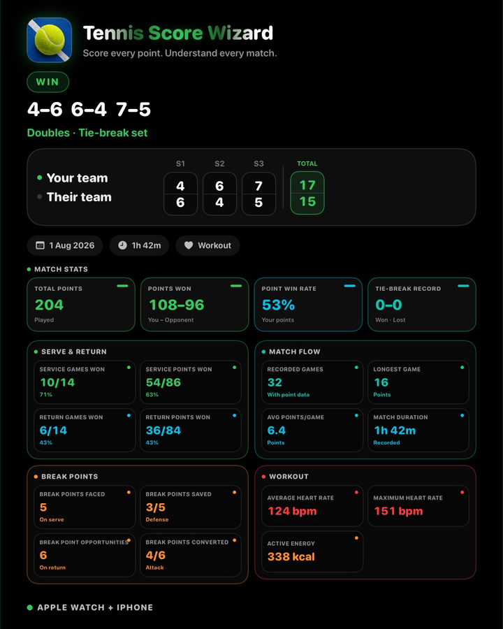
試合結果
スコアと、サービス、リターン、ブレークポイント、試合展開、ワークアウトのデータを1枚にまとめます。
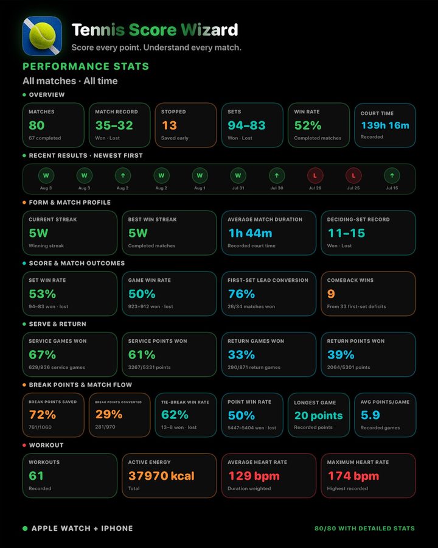
パフォーマンス概要
選択した期間とシングルス／ダブルス／すべての条件をそのまま書き出せます。
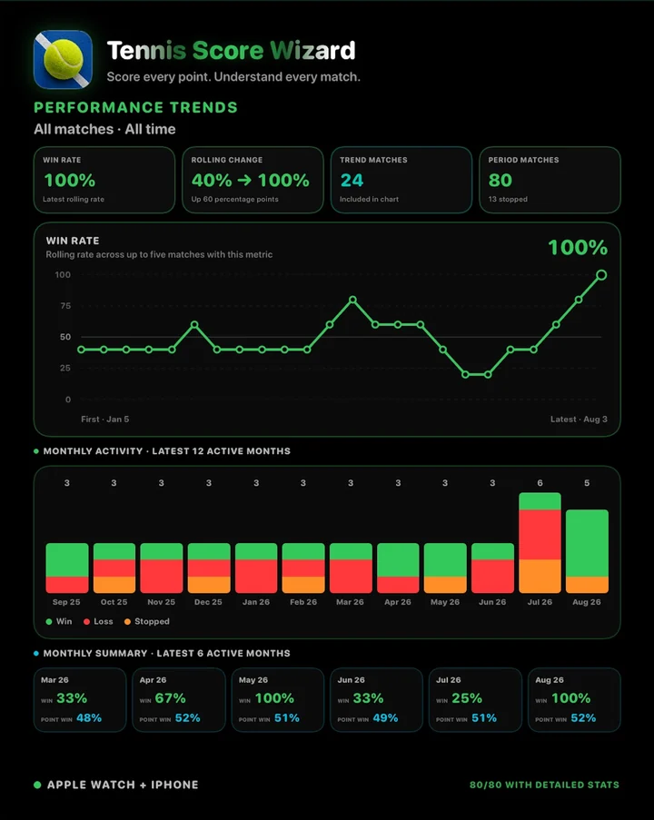
パフォーマンストレンド
選択したトレンドを、月別の試合数と直近の月間サマリーと一緒に共有できます。
Apple Watch用Standalone
必要な機能がすべて、手首に。
試合の設定、各ポイントのスコア記録、サーブ権とサーブ位置の追跡、オプションのワークアウト記録、履歴や統計の確認――これらすべてをiPhoneなしでApple Watchだけで行えます。
Standalone機能
Apple Watchで完結する試合体験
iPhoneに頼ることなく、試合の設定、各ポイントのスコア記録、オプションのワークアウト記録、履歴や自動統計情報の確認が可能です。
テニスのスコアを自動管理
0–15–30–40、デュース、アドバンテージ、ゲーム、セット、タイブレークを大きなタップ領域で自動的に記録します。
自動試合スタッツ
試合後、History でポイント、サーブ、リターン、ブレークポイント、タイブレーク、試合の流れを通常のスコア入力から自動表示できます。
ワークアウト記録
必要に応じてテニスの試合を Apple Health ワークアウトとして記録し、平均心拍数、最大心拍数、アクティブエネルギーを確認できます。
試合コントロール
コイントスによる最初のサーバー選択、サーブ位置ガイド、Switch Server、Undo、自動試合終了、ローカル履歴を使用できます。
Standalone ギャラリー
Apple WatchでのStandalone機能
試合の設定、ワークアウトの記録、ライブスコアリング、タイブレーク、終了した試合、履歴、自動統計など、Standaloneの全フローをApple Watchだけで完結できます。
試合設定
試合開始前にシングルスまたはダブルス、Best of 3 または Best of 5、セットルールを選択します。
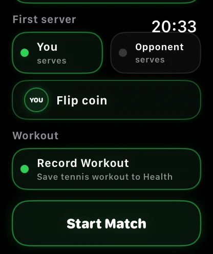
サーバーとワークアウト
最初のサーバーを選び、コイントスを使い、Record Workout を有効にして、同じ画面から試合を開始します。
ライブスコア
大きなカードでスコアを入力しながら、サーバー、サーブ側、セット、ワークアウト状態、ライブ心拍数を確認できます。
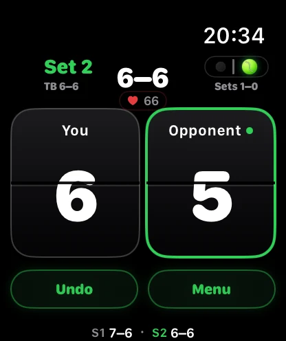
タイブレーク
6–6 のタイブレークポイントも、同じ大きく操作しやすいボタンで記録できます。
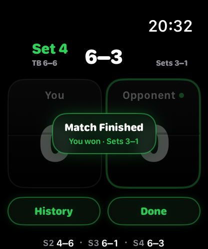
試合終了
試合が決まると、勝者、セット結果、History または Done へのクイックアクセスが表示されます。
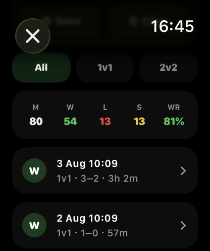
履歴の概要
勝利、敗戦、中断試合、勝率、保存済み試合を Apple Watch 上で確認できます。
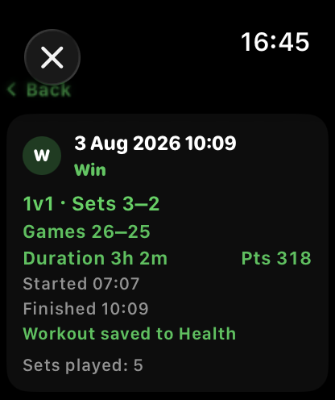
試合サマリー
保存済みの試合を開くと、スコア、ゲーム、時間、総ポイント、ワークアウト状態、中断試合の状況を確認できます。
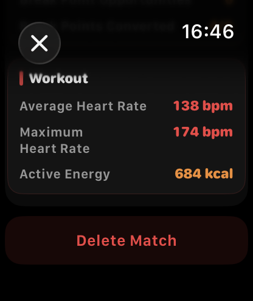
ワークアウトスタッツ
記録されたワークアウトでは、試合保存後に平均心拍数、最大心拍数、アクティブエネルギーを表示できます。
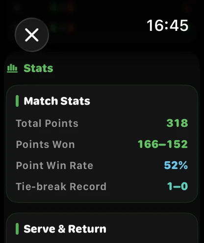
試合スタッツ
総ポイント、獲得ポイント、ポイント獲得率、タイブレーク成績を確認できます。
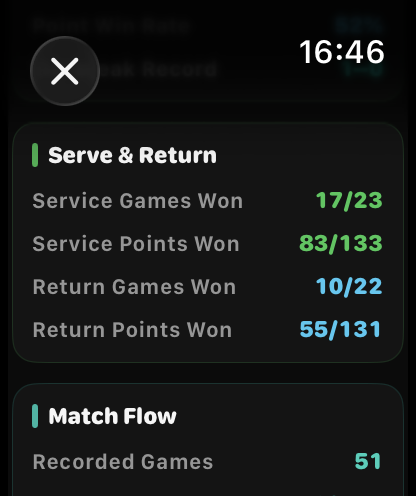
サービスとリターン
サービスゲーム、サービスポイント、リターンゲーム、リターンポイントの獲得数を確認できます。
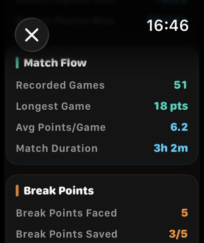
試合の流れ
記録対象ゲーム数、最長ゲーム、ゲーム平均ポイント、試合時間を確認できます。
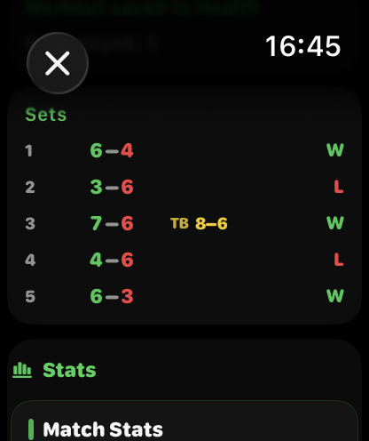
セットとタイブレーク
公式の試合結果として、各セットと記録されたタイブレークスコアを確認できます。
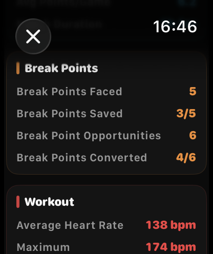
ブレークポイント
直面した回数、セーブ数、チャンス数、成功数を確認できます。
Apple Watch文字盤からすばやく起動
対応するApple Watchの文字盤にTennis Score Wizardを追加すれば、ワンタップでアプリを開けます。
コーナーアイコン
試合前にすぐ起動できるよう、文字盤のコーナーに配置します。
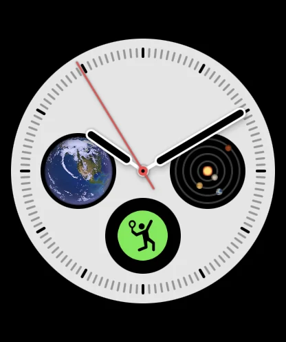
円形アイコン
文字盤の円形エリアに配置し、ワンタップでスコア記録を開始できます。
バージョンの比較
Apple Watchでの体験は同じです。違いは、追加される機能にあります。
Standaloneは、Apple Watchで完全な体験を提供します。Companionには、同じフル機能のWatchアプリに加え、iPhoneとの同期表示機能が追加されています。
完全なApple Watchアプリ
✓ 付属
✓ 付属
マッチ設定、ライブスコア、取り消し、サーブガイド
Apple Watchで
Apple Watchで
マッチ履歴と詳細な統計情報
Apple Watchで
Apple WatchとiPhoneで
ワークアウトと心拍数の詳細
Apple Watchで
Apple WatchとiPhoneで
Apple Watchのコンプリケーション
✓ 付属
✓ 付属
iPhoneとの同期体験
必須ではありません
✓ 付属
月表示・年表示の試合カレンダー
非対応
iPhoneで表示
長期的なパフォーマンス統計とトレンド
非対応
iPhoneで表示
共有できるテキストサマリーとビジュアルカード
非対応
iPhoneで共有
こんな方に最適
すべてを手首で管理したいプレイヤー
フル機能のApple Watchアプリに加え、試合後の情報も大きな画面で確認したいプレイヤー
両バージョンで共有される機能
どちらにも同じテニスのスコアリングロジックを搭載。
自動統計、試合履歴、ワークアウト記録、得点ルール、ヘルプは、StandaloneとCompanionの両方に含まれています。Companionでは、iPhoneとの同期表示機能が追加されますが、試合の得点方法に変更はありません。
試合スタッツガイド
自動統計機能は両バージョンで利用可能で、通常の得点入力操作から自動的に算出されるため、エース、ウィナー、ラリーの長さ、その他の追加の試合データを入力する必要はありません。
ポイント
総プレーポイント数と各サイドが獲得したポイント数を表示します。ポイント差が小さい場合、セットスコアよりも接戦だった可能性があります。
サーブ
自分のサービスゲームでどれだけ良くプレーしたかを示します。サービスゲームは自分がサーブしたゲーム、サービスポイントは自分のサーブで行われた個々のポイントです。
リターン
相手がサーブしたときのプレー内容を示します。獲得したリターンゲームはブレークです。リターンポイントは相手サーブでどれだけポイントを取れたかを示します。
ブレークポイント
セーブしたブレークポイントは自分のサーブでしのいだブレークポイントです。成功したブレークポイントは相手サーブで勝ち取ったチャンスです。
試合の流れ
記録されたポイントから試合の流れを示します：最長ゲーム、ゲーム平均ポイント、記録対象ゲーム数、タイブレーク成績。
ワークアウト
Record Workout が有効で Health 権限がある場合、History で保存されたテニスワークアウトの平均心拍数、最大心拍数、アクティブエネルギーを表示できます。
短い例
実際の試合後によくあるスタッツ行を読む方法です。
ポイント 67–72
自分が 67 ポイント、相手が 72 ポイントを獲得しました。差が小さい場合、セットスコアよりも接戦だったことが多いです。
サービスゲーム 3/10
10 ゲームでサーブし、そのうち 3 ゲームを取りました。自分のサーブをどれだけキープできたかを示します。
リターンゲーム 6/11
相手が 11 ゲームでサーブし、自分が 6 回ブレークしました。
ブレークポイントセーブ 4/11
自分のサーブで 11 回のブレークポイントを迎え、そのうち 4 回をセーブしました。
ブレークポイント成功 6/13
相手サーブをブレークするチャンスが 13 回あり、そのうち 6 回成功しました。
ゲーム平均ポイント 6.3
各ゲームは平均で約 6 ポイント続きました。数値が高いほど、長く接戦のゲームが多い傾向があります。
古い試合
自動スタッツ追加前に保存された試合にはスタッツが含まれない場合があります。バージョン 1.2 以降で保存された新しい試合には新しい History スタッツを含めることができます。
プライバシー
試合履歴はデバイス上にローカル保存されます。Health アクセスは任意で、ワークアウト記録と心拍数関連のワークアウト詳細にのみ使用されます。
クイックヘルプ
試合を開始するには？
Singles または Doubles、Best of 3 または Best of 5、セットルールを選び、最初のサーバーを手動またはコイントスで決め、必要なら Record Workout を有効にしてスコアを開始します。
ワークアウトを記録するには？
設定時に Record Workout を有効にします。Apple Health を許可すると、試合をテニスワークアウトとして記録し Apple Health に保存できます。
ライブ心拍数はどう動作しますか？
Apple Health の許可があり、Apple Watch から心拍数データが利用できる場合、記録中のワークアウトでライブ心拍数が表示されます。
Menu は何をしますか？
試合中、Menu から Switch Server、未完了試合の停止、履歴の表示、新しい試合の開始などにアクセスできます。
Undo はどう動作しますか？
Undo は最後に入力したポイントを取り消し、ポイント、ゲーム、セット、サーバー、サーブ位置、タイブレーク状態、スタッツカウンターを含む前の状態を復元します。
サーブマーカーはどう動作しますか？
自分がサーブするときは、テニスボールがサーブする側を示します。相手がサーブするときは、Watch から見た相手のサーブ側を示します。
試合履歴の見方
どちらのバージョンでも、保存された結果をApple Watchで閲覧できます。また、Companion版では、同じ試合履歴をiPhoneでも表示でき、より大きな画面で確認できます。
WinとLoss は何ですか？
Win は完了した試合にセットで勝ったことを意味します。Loss は相手が完了した試合にセットで勝ったことを意味します。
Stopped は何ですか？
Stopped は通常終了前に試合が保存されたことを意味します。アプリはセット、ゲーム、時間、ポイント、その時点までのスタッツを保持します。
S1、S2、S3 は何ですか？
S1、S2、S3 は Set 1、Set 2、Set 3 を意味します。たとえば S1 6–3 は第1セットが 6–3 で終わったことを示します。
TB 7–3 は何ですか？
TB は 7–6 セット内のタイブレークポイントです。たとえば 7–6 · TB 7–3 は、セットを 7–6、タイブレークを 7–3 で取ったことを意味します。
中断試合はどう評価されますか？
中断試合に明確なセットリードがある場合、History はセットでリードしていた側を表示します。セットが同数の場合はゲーム数、その後利用可能なタイブレークポイントを比較します。
未完了セットはどうなりますか？
中断試合では、進行があった現在の未完了セットも保存されます。これにより、たとえば S3 0–1 のように実際の試合状況が残ります。
FAQ
アプリはデータを収集しますか？
いいえ。試合履歴はデバイス上にローカル保存されます。アカウントは不要で、試合履歴をサーバーに送信しません。
Apple Health アクセスは必須ですか？
いいえ。Health アクセスは任意です。ワークアウトを記録せずにテニスのスコアを付けることができます。
試合スタッツに追加タップは必要ですか？
いいえ。スタッツは通常のスコア入力から生成されます。エース、ウィナー、アンフォーストエラー、ラリーの長さを入力する必要はありません。
ダブルスやタイブレークに使えますか？
はい。シングルス、ダブルス、Best of 3、Best of 5、アドバンテージセット、タイブレークセットに対応しています。
試合履歴を削除できますか？
はい。保存済み試合は History 画面から削除できます。
プライバシー
Tennis Score Wizard は個人データを収集しません。
試合履歴はデバイス上にローカル保存されます。アプリはアカウントを必要とせず、個人データを送信、販売、共有しません。
Apple Health アクセスは任意で、許可された場合にのみテニスワークアウトの記録と記録中のライブ心拍数表示に使用されます。
プライバシーポリシーを読む